이 글을 읽기 전에
- 기록의 성격: 2026년 9월 20일 하루 동안 내 환경 한 곳에서 한 번 성공한 과정을 그대로 정리했다. 다른 환경에서도 똑같이 되는지는 확인하지 못했다.
- 내 환경: apt를 쓰는 리눅스 노트북(x86_64, SSH로만 접속, 브라우저 없음), ChatGPT Plus 계정(웹), OpenAI Platform 개인 조직(결제 수단 없음, 크레딧 $0), tunnel-client v0.0.14, cokacremote 0.1.0, Docker 이미지 node:22-bookworm.
- 공식 지원 방식이 아니다: OpenAI의 Secure MCP Tunnel과 서드파티 MCP 서버(cokacremote)를 조합했다. 터널은 문서상 개발자 모드 테스트 같은 비공개 연결용이고, 이 MCP 서버는 OpenAI가 검토한 것이 아니다.
- 사용량 결과의 범위: “Codex 사용량이 안 줄었다”는 건 프로필 메뉴의 5h / Weekly 미터를 눈으로 비교한 관찰이다. 미터가 정수 %로만 표시돼서 미세한 소모는 안 보일 수 있고, 이 방식이 Codex 한도와 무관하다고 OpenAI 문서로 확인한 것도 아니다. 사용량 집계 방식은 OpenAI가 바꿀 수 있어서(9번 참고) 정책이 바뀌면 결과도 달라질 수 있다.
- 비용: 결제 수단을 등록하지 않은 채로 끝까지 동작했다. 다만 터널에 별도 요금이 있는지는 공식 문서에서 명확히 확인하지 못했다. 따라 할 때는 Platform의 Billing과 Usage를 직접 확인하면서 진행하자.
- 보안: 이 구성은 ChatGPT에 내 노트북(정확히는 Docker 컨테이너 안)에서 명령을 실행할 권한을 주는 것이다. 따라 하다가 생기는 문제의 책임은 각자에게 있다.
남는 리눅스 노트북(SSH 전용, 브라우저 없음)을 ChatGPT의 플러그인(개발자 모드 MCP)으로 연결했다. ChatGPT 대화창에서 파일을 읽고 쓰고 명령을 실행시킬 수 있다. Chat 탭에서 이 플러그인으로 벤치마크를 60회 실행하는 작업을 10분 넘게 돌렸는데, 사용량 미터가 5h 97% / Weekly 69%로 그대로였다. Codex로 같은 정도 작업을 하면 10분에 4% 넘게 줄곤 했었다.
ChatGPT (Chat 탭)
→ OpenAI Secure MCP Tunnel
→ tunnel-client (노트북, 아웃바운드 연결만)
→ cokacremote MCP 서버 (Docker, 127.0.0.1:3000)
→ /shared (= 노트북의 ~/work 폴더 하나)Work 탭은 피해야 한다. 처음에는 플러그인이 Chat 탭에 안 보여서 Work 탭에서 썼는데, 그러자 Codex 사용량이 줄어드는 것처럼 보였다. OpenAI 도움말에는 Codex, ChatGPT Work, ChatGPT for Excel, Workspace Agents가 공유 한도와 크레딧 풀을 함께 쓴다고 나와 있다. 나중에 Chat 탭에서도 플러그인이 보이기 시작했다. 반영이 늦었던 것 같은데 원인은 확실하지 않다.
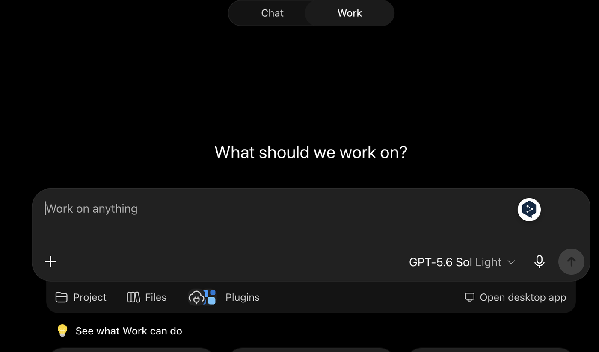
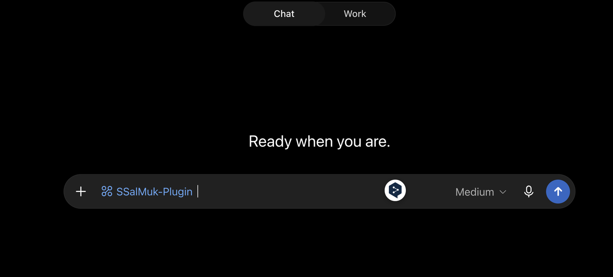
Platform의 “Add payment details”는 누르지 않았다. 터널에 별도 요금이 있는지는 공식 문서에서 확인하지 못했고, Usage와 Billing을 계속 확인하고 있다.
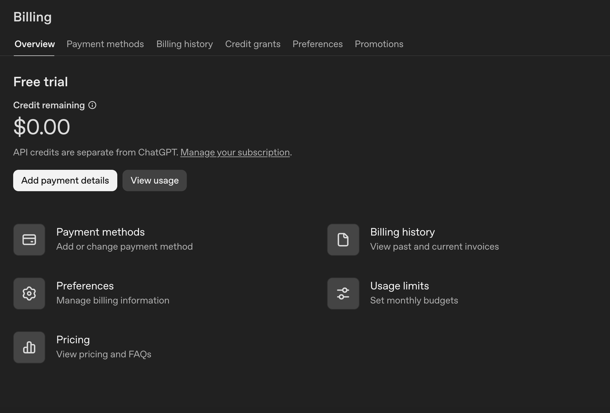
ChatGPT 설정 → Security and login에서 Developer mode를 켰다. 바로 아래의 “device code authorization for Codex”는 이번 작업과 상관없어서 꺼 둔 채로 뒀다.
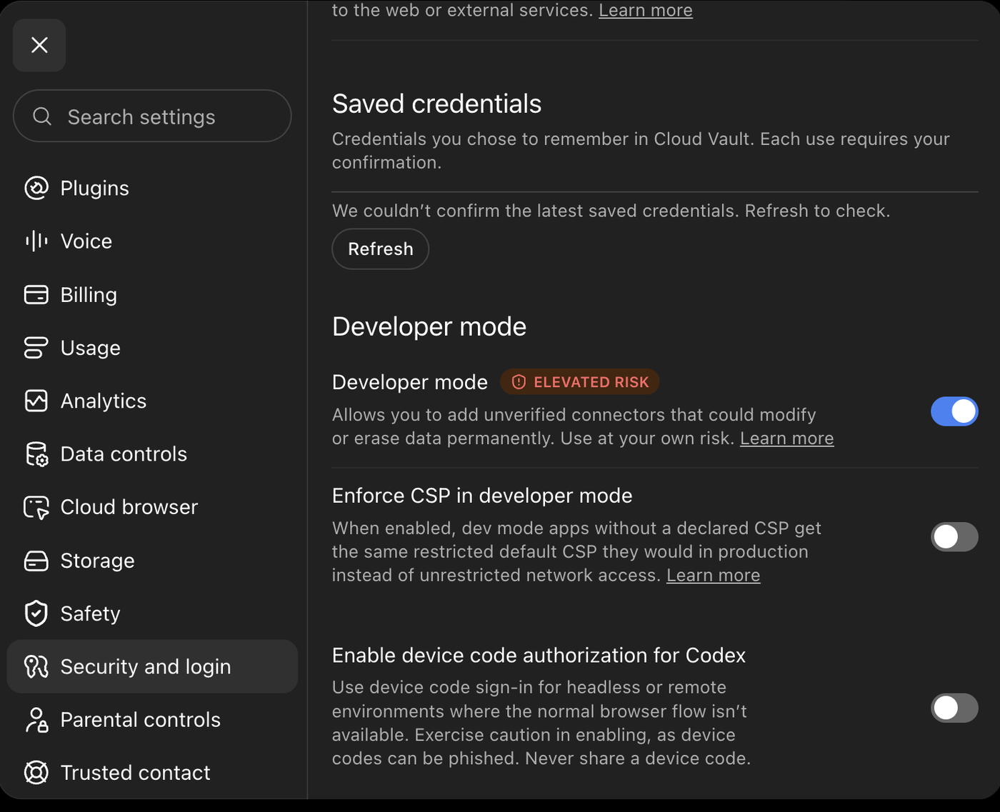
platform.openai.com/settings/organization/tunnels에서
Create tunnel을 눌러 이름과 설명을 넣었다.
Organizations는 Personal, ChatGPT workspaces는 개인 워크스페이스로
골랐다. 생성하면 tunnel_id(tunnel_ +
32자)가 나오는데, 이걸 메모해 둔다. 같은 페이지에 tunnel-client 다운로드
버튼도 있다.
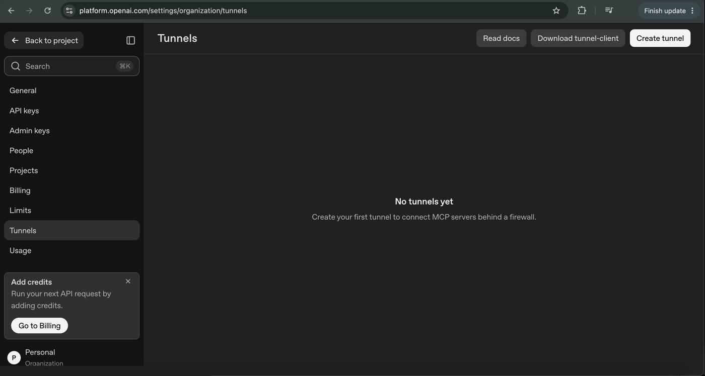
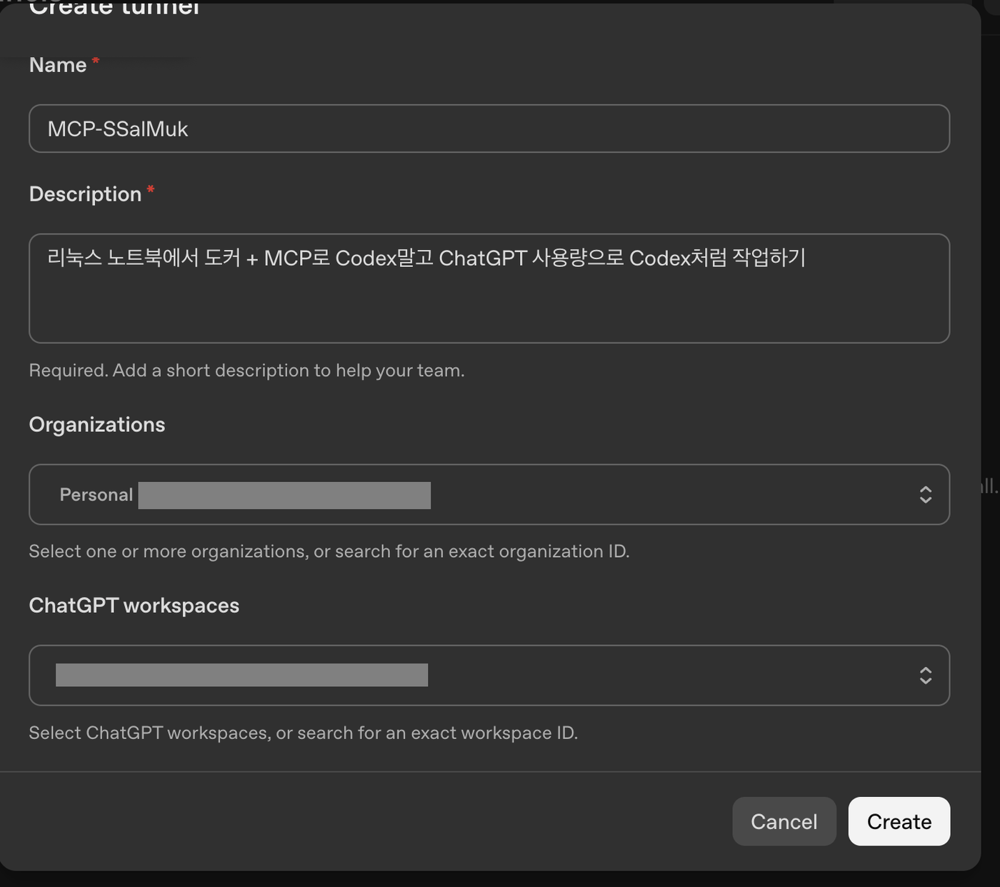
platform.openai.com/settings/organization/api-keys에서
Create new secret key를 눌렀다.
키 전체는 생성 직후 한 번만 보여서 바로 복사해 보관했다. 90일 뒤 만료되면 새로 만들어 교체하면 된다.
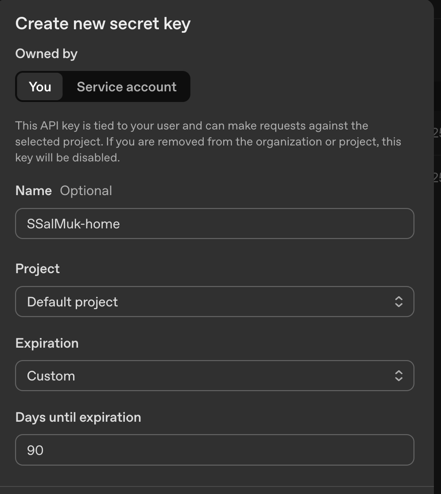
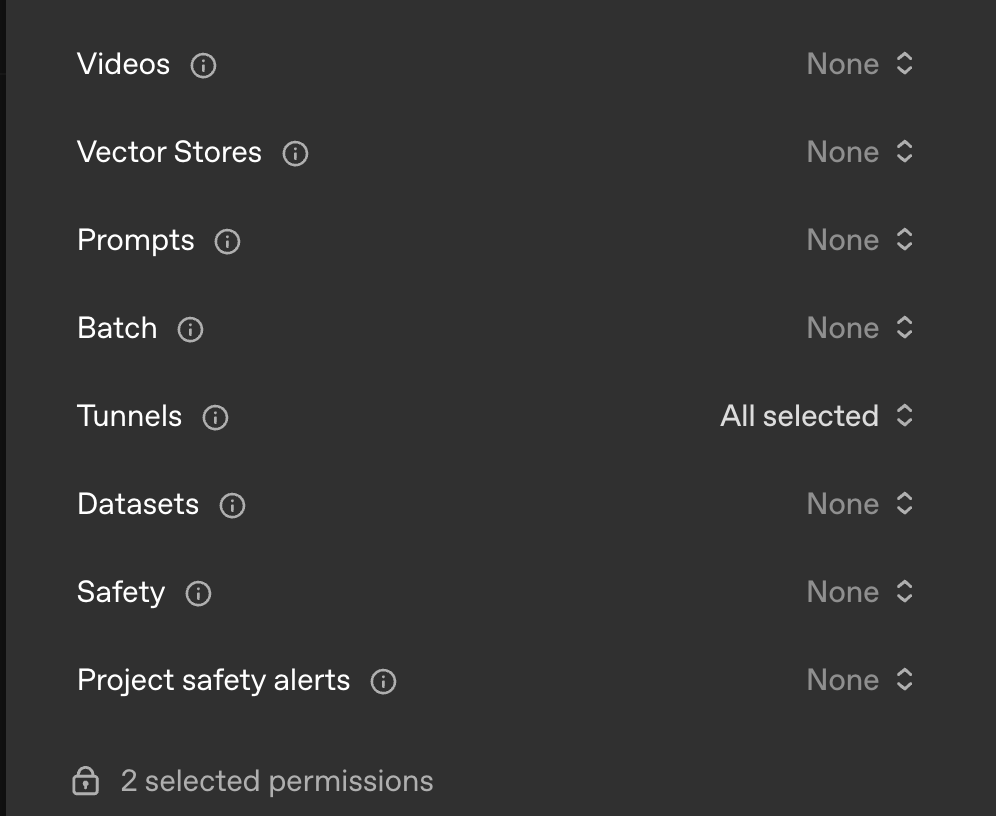
MCP 서버는 cokacremote를 썼다(MIT). 셸 실행과 파일 읽기·쓰기·삭제 도구 20개를 제공한다. README가 샌드박스, 명령 허용 목록, 실행 승인, 경로 제한이 없다고 직접 경고하는 도구라서, 호스트에 그냥 깔지 않고 Docker 안에서만 돌렸다.
먼저 저장소를 받아 코드를 훑어보고 커밋 해시를 고정했다.
git clone https://github.com/kstost/cokacremote.git /tmp/cokac-review
cd /tmp/cokac-review && git log -1 --format=%H # 나온 해시를 아래 REF에 넣기
mkdir -p ~/work ~/cokac && cd ~/cokac~/cokac에 세 파일을 만들었다.
Dockerfile
FROM node:22-bookworm
RUN apt-get update \
&& apt-get install -y --no-install-recommends git python3 openssl curl ca-certificates \
&& rm -rf /var/lib/apt/lists/*
ARG REPO_URL=https://github.com/kstost/cokacremote.git
ARG REF=main
RUN git clone "$REPO_URL" /opt/cokacremote \
&& cd /opt/cokacremote \
&& git checkout "$REF" \
&& npm ci \
&& npm run build
WORKDIR /shared
ENV MCP_DEFAULT_CWD=/shared
EXPOSE 3000
CMD ["npm", "--prefix", "/opt/cokacremote", "start"]docker-compose.yml
services:
cokacremote:
build:
context: .
args:
REPO_URL: ${REPO_URL:-https://github.com/kstost/cokacremote.git}
REF: ${REF:-main}
container_name: cokacremote
restart: unless-stopped
ports:
- "127.0.0.1:3000:3000"
volumes:
- ${SHARED_PATH:?set SHARED_PATH in .env}:/shared
environment:
MCP_HOST: "0.0.0.0"
MCP_PORT: "3000"
MCP_DEFAULT_CWD: /shared
MCP_ALLOWED_HOSTS: "127.0.0.1,localhost"
MCP_AUTH_TOKEN: ""
MCP_OAUTH_ENABLED: "false"
MCP_ALLOW_NO_AUTH: "true"
security_opt:
- no-new-privileges:true
mem_limit: 2g
pids_limit: 512
healthcheck:
test: ["CMD", "curl", "-fsS", "http://127.0.0.1:3000/health"]
interval: 30s
timeout: 5s
retries: 3.env
SHARED_PATH=/home/<내 계정>/work
REPO_URL=https://github.com/kstost/cokacremote.git
REF=<위에서 얻은 커밋 해시>핵심은 세 가지다.
127.0.0.1에만 포트를 열어서 같은 망의 다른
기기도 못 붙는다.~/work 하나뿐이다.docker compose up -d --build
curl -s http://127.0.0.1:3000/health응답에 "oauthEnabled":false가 보이면
정상이다(unrestrictedHostAccess:true는 서버의 원래 성격이라
그대로 나온다). 노출 범위도 확인했다.
ss -ltn | grep 3000 # 127.0.0.1:3000 이어야 함 (0.0.0.0이면 중단)
docker inspect cokacremote --format '{{.HostConfig.Privileged}} {{range .Mounts}}{{.Source}}->{{.Destination}} {{end}}'
# false /home/<계정>/work->/shared릴리스 페이지에서 Linux용 풀 클라이언트를
받았다(runtime이 이름에 붙은 건 실행 전용이라
init과 doctor가 없다).
cd /tmp
curl -fsSLO https://persistent.oaistatic.com/tunnel-client/v0.0.14/tunnel-client-v0.0.14-linux-amd64.zip
curl -fsSLO https://github.com/openai/tunnel-client/releases/download/v0.0.14/SHA256SUMS.txt
sha256sum -c --ignore-missing SHA256SUMS.txt # ...linux-amd64.zip: OK 확인
sudo apt install -y unzip
unzip tunnel-client-v0.0.14-linux-amd64.zip -d tc
sudo install -m 755 tc/tunnel-client /usr/local/bin/tunnel-client버전은 바뀔 수 있으니 릴리스
페이지에서 최신을 확인하자. arm64는 파일 이름의 amd64만
바꾸면 된다.
API 키는 명령줄에 적지 않고 입력 대기 상태에서 붙여넣었다.
read -rs CONTROL_PLANE_API_KEY && export CONTROL_PLANE_API_KEY # 키 붙여넣고 Enter (화면에 안 보임)
tunnel-client init --sample sample_mcp_remote_no_auth --profile local-http --tunnel-id tunnel_<내 ID> --mcp-server-url http://127.0.0.1:3000/mcp
tunnel-client doctor --profile local-http --explain
tunnel-client run --profile local-httpinit은 한 줄로 입력해야 한다. 줄바꿈
기호(\)와 다음 명령이 합쳐져서 에러가 났었다.doctor가 RESULT ok를 내면
run으로 넘어간다. mcp_server_reachable에서
HTTP 405가 나오는 건 정상이다(이 서버는 GET을 405로 거절한다).curl -fsS http://127.0.0.1:8080/readyz가
ready면 연결된 것이다. 8080이 이미 쓰이고 있다면
run에 --health.listen-addr 127.0.0.1:18080을
붙이면 된다. 나는 8080을 쓰던 옛 서비스를 꺼서 기본 포트를 그대로
썼다.chatgpt.com/plugins에서 + 버튼을 누르고
Connection을 Tunnel로 골라 내 터널을 선택했다(안 보이면
“Use tunnel ID instead”로 tunnel_id를 직접 입력하면 된다).
Authentication 기본값이 OAuth인데, 반드시 No Auth로 바꿔야
한다. “I understand and want to continue”에 체크하고 Create →
Connect를 눌렀다.
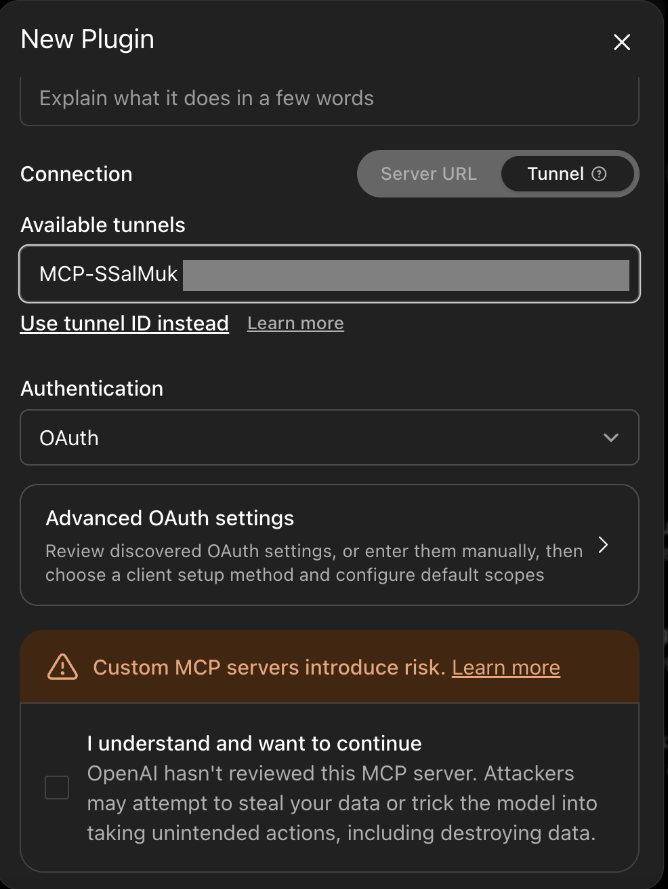
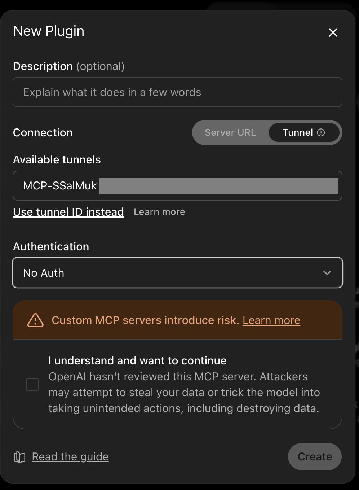
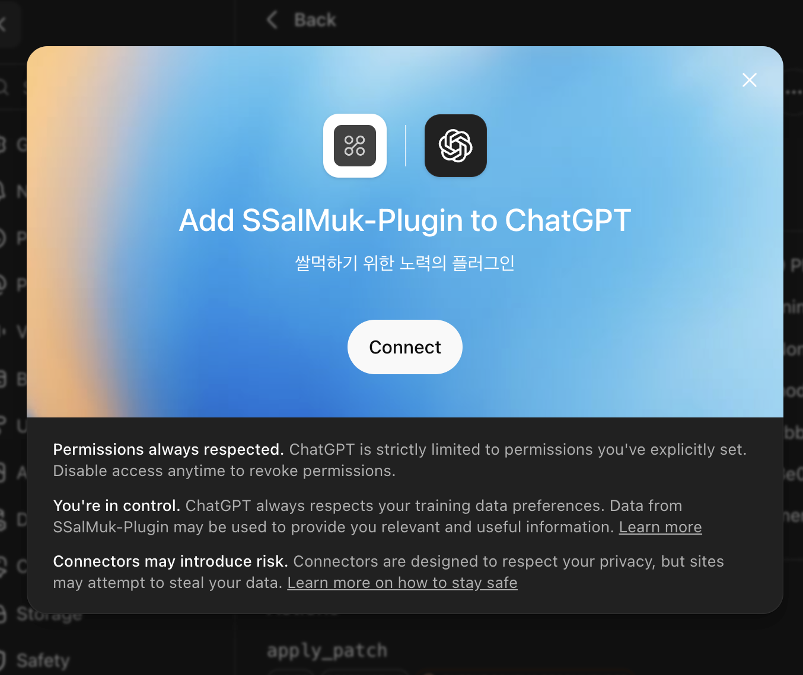
Chat 탭의 새 대화에서 플러그인을 선택하고 이렇게 시켜 봤다.
여기는 Docker 컨테이너이고 작업 폴더는 /shared야.
whoami,cat /etc/os-release,ls /home을 실행해서 결과를 그대로 보여줘.
결과는 root,
Debian GNU/Linux 12 (bookworm)이 나왔고
/home에는 컨테이너 기본 계정만 보였다. 내 계정은 안
보였으니 호스트가 아니라 컨테이너 안에서 실행되고
있다는 뜻이다.
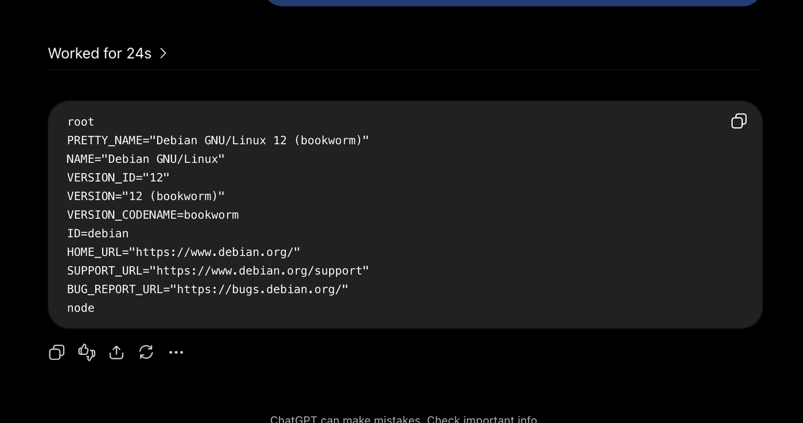
이어서 /shared에 파일을 만들게 하고 노트북에서
확인했다.
/shared 안에 test-folder라는 폴더를 만들고 hello.txt에 “hello”라고 써줘.
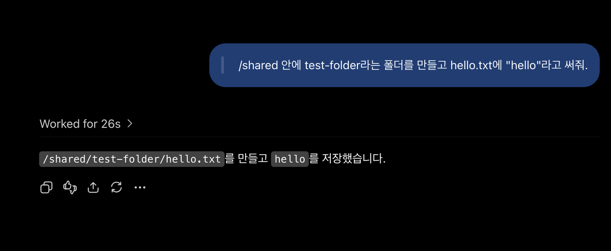
ls -la ~/work/test-folder소유자가 root로 보이는 건 컨테이너가 root로 파일을 만들어서라 정상이다.
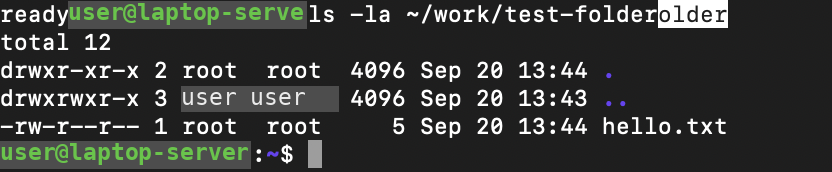
tunnel-client를 서비스로 등록했다. 컨테이너는
restart: unless-stopped라서 Docker가 켜지면 같이 올라온다.
systemctl is-enabled docker가 enabled인지도
확인해 두자.
sudo tee /etc/systemd/system/tunnel-client.service >/dev/null <<'EOF'
[Unit]
Description=OpenAI Secure MCP Tunnel client
After=network-online.target
Wants=network-online.target
[Service]
User=<내 계정>
EnvironmentFile=/etc/tunnel-client.env
ExecStart=/usr/local/bin/tunnel-client run --profile local-http
Restart=always
RestartSec=5
NoNewPrivileges=true
PrivateTmp=true
[Install]
WantedBy=multi-user.target
EOF
sudo install -m 600 /dev/null /etc/tunnel-client.env
read -rs K; echo "CONTROL_PLANE_API_KEY=$K" | sudo tee /etc/tunnel-client.env >/dev/null; unset K
sudo systemctl daemon-reload && sudo systemctl enable --now tunnel-client
systemctl is-active tunnel-client && curl -fsS http://127.0.0.1:8080/readyzUser는 tunnel-client init을 실행한 계정과
같아야 한다. 프로필이 그 계정의 설정 폴더에 만들어지기 때문이다.tunnel-client run은 꼭 종료해야
한다. 8080 포트가 겹쳐서 서비스가 실패하는데도 readyz는 옛
프로세스가 대신 답해서 정상처럼 보인다. 나도 tmux에 옛 프로세스가 남아
있어서 한 번 걸렸었다. pgrep -af tunnel-client 결과가 한
줄인지 확인하자.프로필 메뉴의 Usage remaining에 5h와 Weekly가 정수 %로 나온다. 세 가지를 확인했다.
시작 전 값은 5h 97%, Weekly 69%였다.
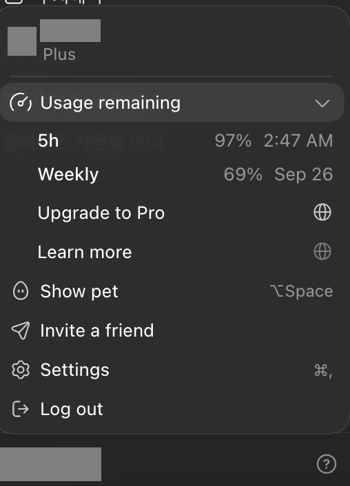
아래 작업을 Chat 탭 + 플러그인으로 실행했다.
소수 구하기 알고리즘 3종을 각각 20번씩, 실행마다 별도 명령으로 돌리게
했고 검증 테스트와 결과 파일도 만들게 했다. 작업이 끝나자
bench.tsv에 60회 실행 기록이 남아 있었다.
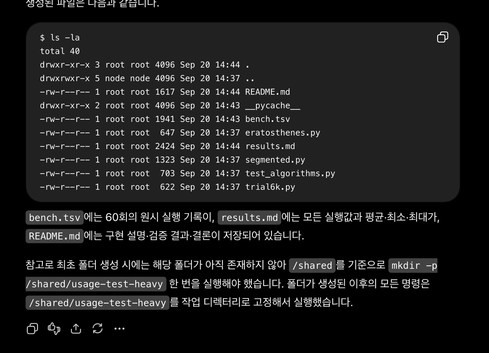
작업이 진행되고 10분 넘게 지난 시점에 다시 확인했을 때도 5h 97%, Weekly 69%로 그대로였다.
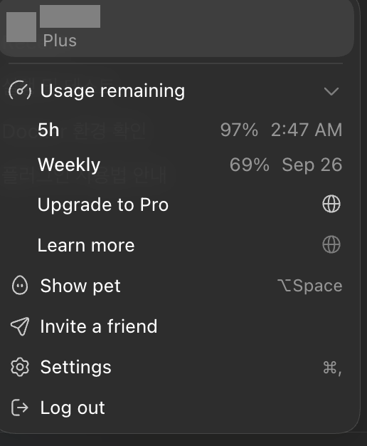
한계도 적어 둔다.
~/work로 가둔다. 컨테이너는
인터넷에 나갈 수 있고 /shared 안 파일은 읽고 쓰고 지울 수
있으니, /shared에 SSH 키, 비밀번호, API 키를 두면
안 된다.apt install 등으로 바꾼 것은 컨테이너를
삭제하거나 재빌드하면 사라진다. 남길 결과물은 /shared에,
항상 필요한 도구는 Dockerfile에 넣자.sudo systemctl disable --now tunnel-client
docker compose -f ~/cokac/docker-compose.yml down # 잠깐 멈추려면 stop
sudo rm -rf ~/work/test-folder # 컨테이너 root 소유라 sudo 필요그다음 Platform에서 API 키를 폐기하고 터널을 삭제하면 된다.